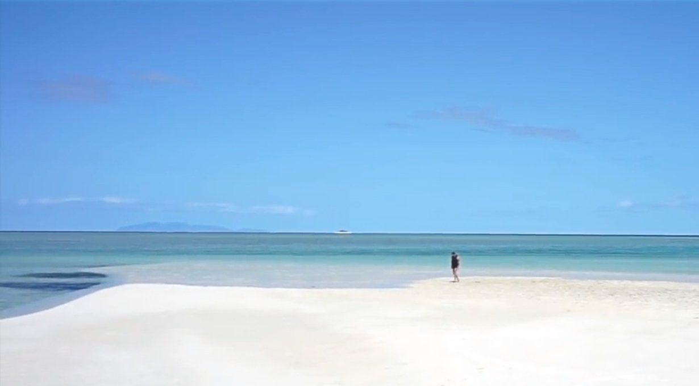
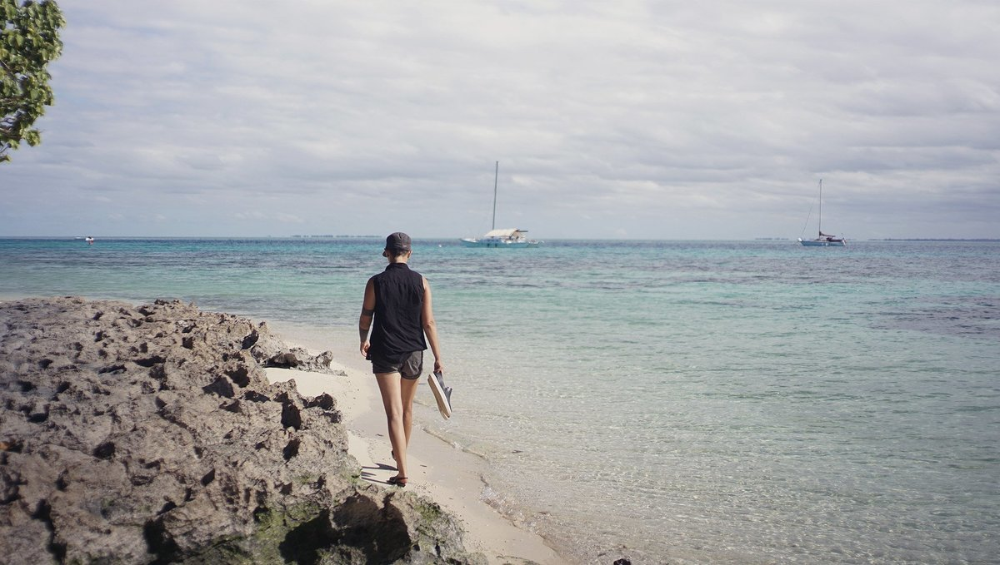
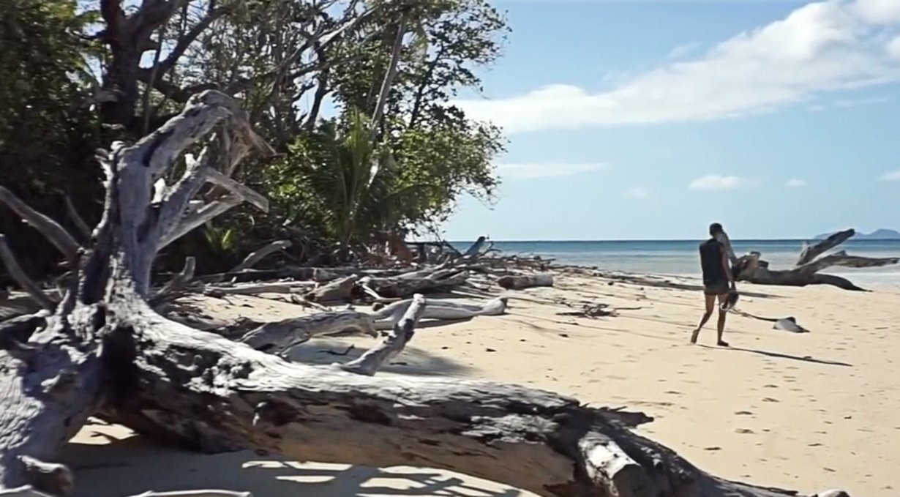
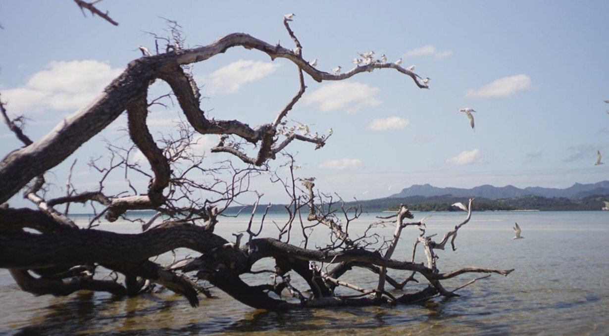
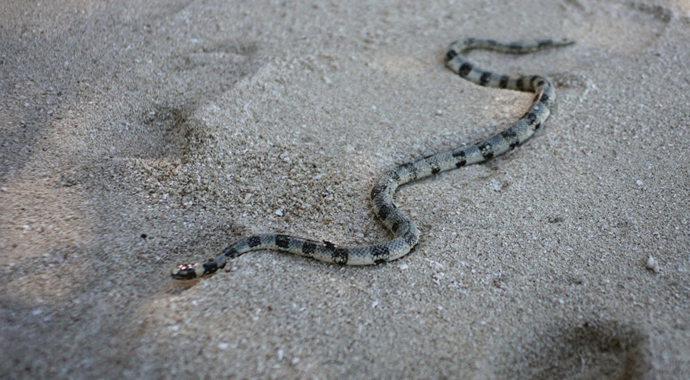

leleuvia
Leleuvia
18.09.05
Leleuvia, Fiji
This was our first time on a tiny island, a place we could run the width of under just a few minutes. Leleuvia is an island in the Lomaitivi archipelago in Fiji.
This island went through many hands, but now belongs to a resort that too bears the name of the island. We decided to make a stop there on our way to Suva to wait for favorable winds to go south—also, we wanted a taste of tiny-island living.
We arrived at Moturiki pass around 1300. Our friends Eric and Vandy gave us a number to phone the resort on arrival so they could send a boat to guide us through the reef. We realized then that our phone plan didn't include calls within Fiji, all we had was data. We called them on VHF instead.
We had waypoints for the entrance, but not all the way to the anchorage. Many areas in Fiji aren't charted well. You can find yourself navigating over an area with the depth sounder reading 10 m but the chart will display a patch of green, an area too shallow to pass. It's always disconcerting to find yourself anchored in a place where the chart doesn't match reality.
We got closer and closer to the green area, growing nervous, and continuing to try and hail the resort. Eventually, they picked up our call.
We motored on, nearing the pier, and spotted the escort boat. The driver came within shouting range, instructing us to follow, which we promptly did. They led us to a mooring, and assured us it was strong and that it could take our weight. Grabbing the line from the water was difficult. Sometimes the mooring 'eye' for the buoys is submerged, and you need to figure out which bit to grab to get to it. We missed the mooring ball the first time, the whole endeavour was made worse by the up and down motion of the bow because of a swell coming into the anchorage. We rounded again to grab the mooring ball, I spied a thin loop at the top of the ball, and thrusted the boat hook in it. I hurriedly pulled the float out of the water. My hands found the mooring loop. This is not my favorite type of mooring ball, where you need to pull the ball up itself to find the rope hanging far underneath it, usually they'll put a separate float on the line to keep it buoyant. All moorings are different.
The northerly swell would stop soon. The forecast called for 20-25 kts out of the SE tomorrow. On the chart, the area looked protected from swell from that direction, with a reef belt around it, but looking around now, aside from a tiny spit of land there was only water. At low tide the reef became evident. As the water receded, sand banks came into view, fencing us in from all directions but from the north. Phew. The reef would break most of the waves, but at high tide some swell would make it past it for sure—not ideal, but we would have some protection.
The next day the wind did freshen, and as expected, at high tide the waves spilled into the anchorage. It was bumpy, but not overly so.
Iggy still needed mending. We'd fixed some of the seams but not all. We didn't trust Iggy enough at this point to use Turnip, imagine Iggy losing air and Turnip flopping into the water—what a disaster that would be. Without an outboard, we had little chance of making it ashore in an inflatable with broken oars, especially with all of this current. The weather that day was all-around bad. Squalls came in succession. Pino danced with them in passing, until they drifted out of range. The rain came down hard. We could see land, but couldn't get to it.
The waves in the night kept us awake. We couldn't sleep, wondering if that mooring was as strong as they claimed it to be. We can now say that yes, that mooring was good and we stayed put. We were getting restless though, and even walking up on deck couldn't stop the twitch in our legs. The wind had died down, so we decided to call the resort on VHF to ask if we could get a ride to shore, explaining the issue with our dinghy. They were again happy to help.
The boat driver dropped us off at the main pier, and we hopped onto land. It's weird to have the permission to come to a place like this, it feels exclusive, expensive and populated by tourists. It feels like cheating, as if we too should be paying an equal share to be here. The mooring itself is free, although there is an unwritten rule about coming to shore at least once if you're on a mooring, to eat a meal at the restaurant, or to have a drink. In this way, it pays itself.
The resort had many separate facilities, with roofs of dried palm fronds kept up by thick logs. There were huts scattered all over the place, where the tourists stay. There was a dive shop, to rent diving or snorkeling gear, we even found showers that all can use (yes that means us too). This resort was low-key, not overly expensive, which is kind of insane considering you need to take a boat to get here. It's far from everything, secluded—its own little country.
Resorts in Fiji didn't used to be this way, in the past they could restrict access to the land and the water around them. Giving the rise in numbers of resorts in the country, Fiji instated a law that annulled these restrictions and that returned access to all—Fijians and visitors alike. Some sailors in countries like Canada seek these same privileges, requesting access to waters that are no longer accessible to them. With the rising trend in real estate prices, more and more people will seek alternative lifestyles like becoming a liveaboard. Space on water needs to remain accessible to all.
In today's world, the 'right to anchor' is fantasy, widespread privatization of water and beach fronts is inevitable. If no one takes action this will come to pass, groups in 'real-estate hell' cities like Vancouver are already taking a stand against this. Here's hoping they're successful, and that liveaboards will never suffer the woes of grid-living.
Back on Leleuvia, Devine & I took a quick walk around the facilities of the resort. We walked to a sandspit to the south of the island that extended far, even farther at low tide. The sand was almost white, near perfect, and the same could be said of the water—certainly not in terms of color, but of clarity.
We decided then to round this small island by foot. Most of the resort is concentrated on the southern end, the rest is thick with trees, their arms reaching out and curling near the water. These arms carried families of terns, amongst them, some of the largest I'd ever seen, much bigger than the ones who came to sit on our pile mooring in Whangarei. The white, black-capped birds all took off as we came near, taking to the skies whilst screaming into the wind. Big slabs of coral bordered the water, flat and smooth, softened by centuries of wave-caressing.
Blinded by the greenery and turquoise sea, we forgot to look at our feet, a striped snake drew near—hm, best look down every now and then. This island was very much alive. Writhing.
After our rapid circumnavigation of Leleuvia, we paid our unspoken dues to the resort by having some drinks at the bar. Then, an employee at the dive shop offered us a ride back home. We boarded the boat with him, and motored on slowly as we shared stories. He told us he was an olympic athlete, racing polynesian canoes. He was very proud of this sport, his face lighting up as he spoke of it. It's great to see younger Fijians taking interest in traditional sport, it is used less for transportation nowadays, but I'm happy that they still make use of them. We drifted past Pino, listening to his story, his goals... but we all returned to reality then, he kicked the engine into gear and brought us home.
That night, we prepared Pino to leave, at sundown we raised the main. We left the anchorage in the dark to make it to Suva at first light, with the waypoints recorded coming in, making an exit in little light was safe enough.
This was a short text, befitting this small island. For more, watch the video about our stay in Leleuvia.